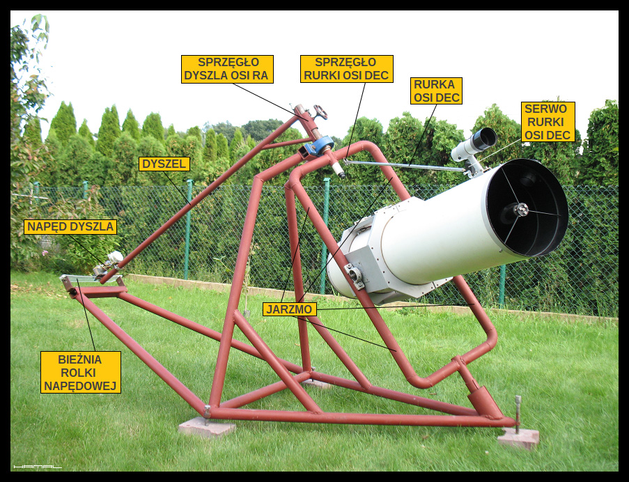
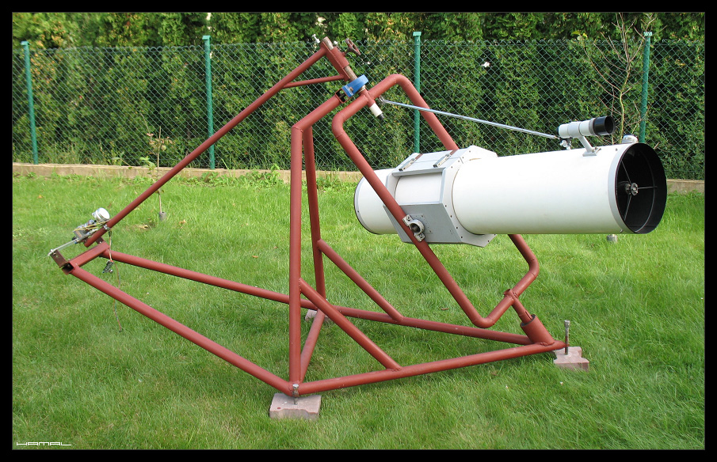
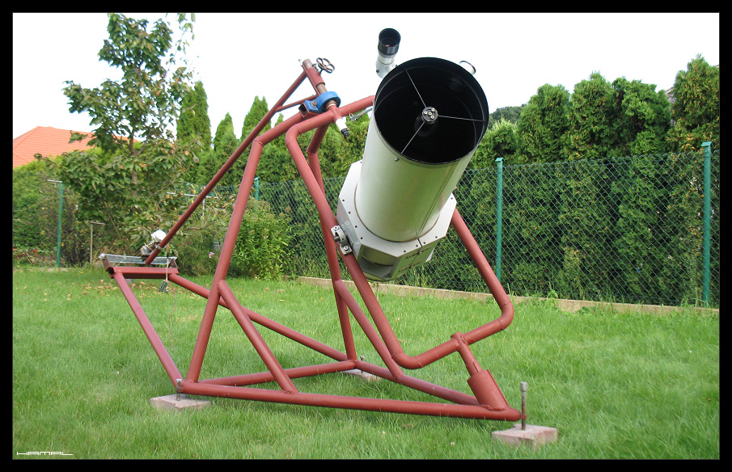
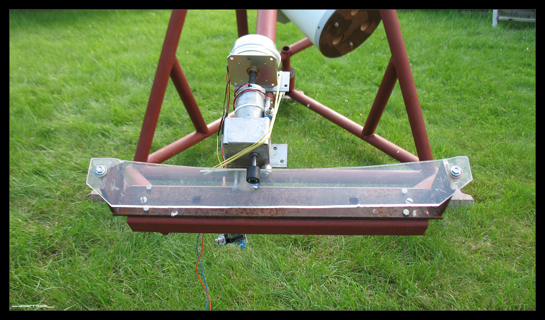
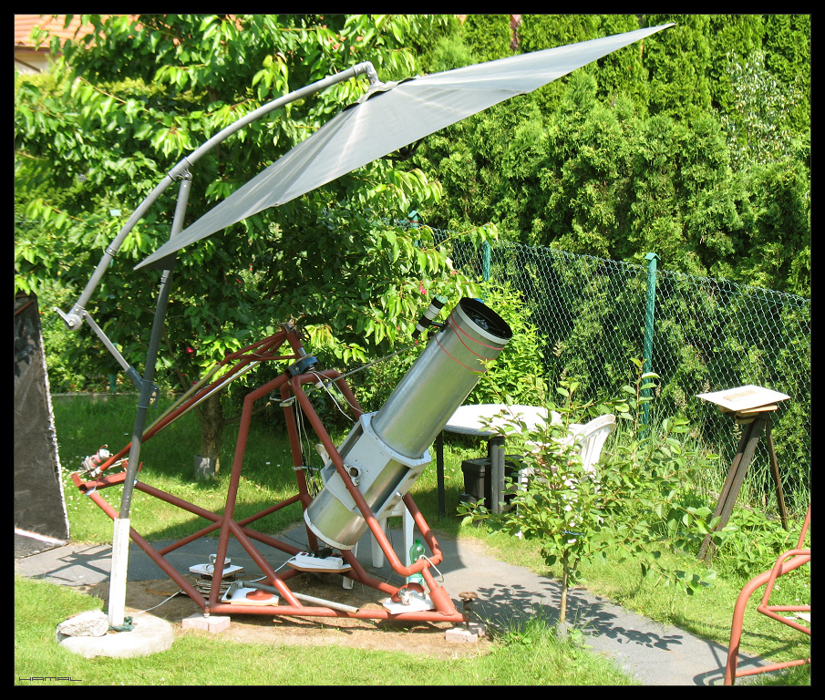
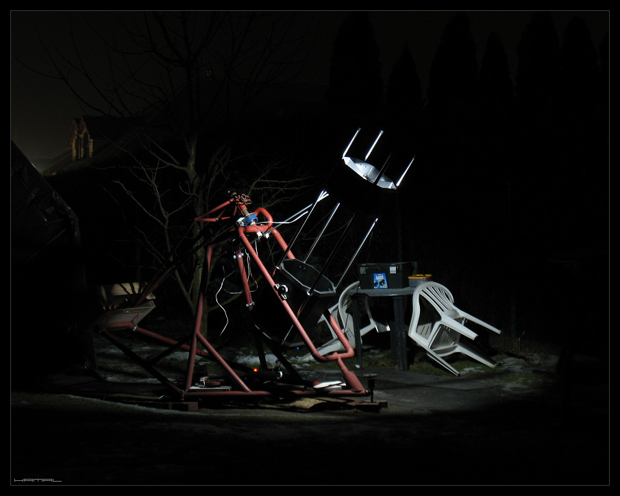

.
ANGIELSKI - JARZMOWY - SYMETRYCZNY - DYSZLOWY
.
SAMODZIELNY PROJEKT I BUDOWA MONTAŻU
|
Tytułem wstępu rozszyfrujmy nagłówek, bo sporo tam dziwnych zwrotów :) No więc... Montaż - uchwyt, mocowanie, pozwalające na zamontowanie w pożądany sposób w naszym przypadku teleskopu astronomicznego. Astronomiczny - gdyż znajduje zastosowanie w astronomii. Paralaktyczny - montaż Angielski to także montaż równikowy, czyli podobnie jak jego Niemiecki kolega, paralaktyczny. Angielski - oś RA jest długa, podparta/ułożyskowana na obu swoich końcach, a pomiędzy punktami podparcia osi RA osadzony jest teleskop. Taki typ montażu jest montażem Angielskim. Dla odmiany, w montażu typu Niemieckiego obie osie RA i DEC są połączone ze sobą w kształt litery T, gdzie nóżka "|" to oś RA, a poprzeczka "⚊" to oś DEC. Na jednym końcu osi DEC zawieszony jest teleskop, a na drugim przeciwwaga. Jarzmowy - tuba teleskopu osadzona jest w obrotowym jarzmie -⊏⊐- pełniącym funkcję osi RA. Symetryczny - teleskop jest osadzony centralnie symetrycznie w jarzmie (Angielski symetryczny jarzmowy). Bywają też montaże asymetryczne (Angielski asymetryczny krzyżowy) w tamtym przypadku, oś RA to długa poparta na obu końcach sztywna (czasem pełna) konstrukcja, która posiada gdzieś w połowie długości dodatkową poprzeczną oś pod kątem prostym (oś DEC) stąd nazwa krzyżowy, na tej dodatkowej osi, po jednej stronie wisi teleskop, a po drugiej stronie przeciwwaga. Dyszlowy - a to już moja inicjatywa nazewnicza :) oś RA nie jest napędzana/obracana w typowy dla takich konstrukcji sposób, czyli "nadzianą na nią" przekładnią ślimakową, lecz ma wyprowadzony od niej długi dyszel, a na końcu dyszla napęd, który to napęd tocząc się, przemieszcza końcówkę dyszla, tym samym, ciągnąc/obracając za dyszel połączone z nim jarzmo osi RA wraz z teleskopem. nadto... RA - Rektascensja DEC - Deklinacja  Dlaczego zdecydowałem się akurat na montaż paralaktyczny Angielski symetryczny jarzmowy? Założenie było proste. Montaż ma być duży, wręcz nadmiarowy, aby uniknąć typowej (dla tego hobby) sytuacji, z liczeniem gramów wagi sprzętu, który będzie nosił. Jako przykład mogę wskazać, że aby w wietrzne noce zwiększyć bezwładność osi RA, montuję czasem na niej krawężnik drogowy, on sam w sobie przekracza wagą nośność niejednego fabrycznego montażu, a u mnie czyni jedynie za tłumik bezwładnościowy. Nadto, montaż Angielski, w przeciwieństwie do swojego kolegi, montażu Niemieckiego, posiada dłuuugą oś Ra, więc potencjalne niedokładności łożysk na jego skrajnych końcach, nigdy nie będą miały takiego wpływu na dokładność prowadzenia, jak nawet najdrobniejsze błędy toczne króciutkich osi jego Niemieckiego kolegi. Chciałem też maksymalnie prostej konstrukcji, stąd do obsługi osi RA i DEC zamiast przekładni ślimakowych zastosowałem rozwiązania niekonwencjonalne, ale dużo odporniejsze na niedokładności pracy, co więcej, znacznie mniej podatne na wiatr. Sposób obsługi osi DEC jest znany z innych konstrukcji, choć zwyczajowo bywa w formie podpórki, u mnie jest w formie zawiesia, natomiast sposób obsługi osi RA jest moim autorskim nietypowym wdrożeniem przekładni ciernej. Montaż tego typu obsługuje wschodnio-południowo-zachodni nieboskłon, jednak to tu górują wszystkie gwiazdozbiory a w nich obiekty. Nadto, z uwagi na zastosowanie przeze mnie krótkiego jarzma, teleskop w nim osadzony nigdy nie ujrzy Gwiazdy Polarnej, ale dla sztywności konstrukcji świadomie zrezygnowałem z tej części nieba, nie ma tam zbyt wielu obiektów a zasięg +70° DEC jest w zupełności satysfakcjonujący. BUDOWA MONTAŻU: Rama główna jest spawana z rur Φ 48mm, nigdy nadmiaru sztywności gdy chodzi o takie konstrukcje. Oś RA jest wykonana z rury Φ 42mm, ułożyskowana. W jej górnej części umieszczona jest lunetka polarna, po zamontowaniu do niej kamerki służy do precyzyjnego ustawiania montażu na biegun metodą Boltwooda.  Montaż paralaktyczny jarzmowy Napęd osi DEC jest nietypowy. Cienka rurka przymocowana do ramy jarzma oraz tuby teleskopu tworzy przekątną, dając maksymalnie sztywne połączenie. Zgrubne położenie ustawiamy za pomocą zacisku rurki, jednak, aby mieć też możliwość precyzyjnego pozycjonowania teleskopu w osi DEC, na końcu rurki, od strony teleskopu, zamontowane jest serwo modelarskie z napędem śrubowym. W umieszczone w rurce nakrętki wkręca się napędzana serwem śrubka.  Budowa montażu paralaktycznego jarzmowego  Selfmade symmetric English mounting (in yoke) Napęd osi RA też jest nietypowy. Na osi RA, w jej górnej części, osadzony jest długi dyszel w postaci rury, można go za pomocą zacisku z osią RA zespajać, bądź uwalniać, co pozwala, po rozprzęgnięciu, na zgrubne swobodne poruszanie teleskopem bez konieczności angażowania w tym celu napędu. Długość dyszla wynosi 1570mm i została dobrana tak, aby 1s ≈ 0,1mm drogi ciernej rolki napędowej. Rolka cierna napędowa napędzana jest silnikiem krokowym za pośrednictwem przekładni 1:200 i toczy się po płytce z pleksi o grubości 5mm. Cały zespół napędowy jest zamykany w (nieobecnej na zdjęciu) obudowie, która zapobiega osadzaniu się rosy i szronu. Pierwotnie prowadzenie składało się z napędzanej nakrętki M8 przemieszczającej się po gwincie wygiętego w łuk pręta gwintowanego M8, jednak w czasie prób ujawniło się wiele niedokładności, czego prawdopodobną przyczyną było nierównomierne zagęszczenie gwintu powstałe w procesie kształtowania łuku pręta, a w sytuacji, gdy 0,1mm drogi napędu to sekunda prowadzenia, każde małe odchylenie to błąd dyskwalifikujący rozwiązanie.  Projekt zakiełkował mi w głowie ok. 2005 roku, zmaterializował się w 2011, i cieszę się, że doczekał się realizacji, bo spełnia moje oczekiwania w pełni. Zajmuję się astrofotografią wysokich rozdzielczości, stawia ona przed montażem bardzo wysokie wymagania, o efektach pracy prezentowanego tu urządzenia możecie się przekonać, przeglądając moją galerię.
Montaż cały czas jest na etapie rozwoju, testów i optymalizacji.
Obecnie stosowane rozwiązania mogą się nieznacznie różnić od wyżej prezentowanych.  Polowanie na Merkurego i Wenus latem - Teleskop Newton 305/1500  Montaż zimą - Teleskop Newton Trus 320/1500 
|